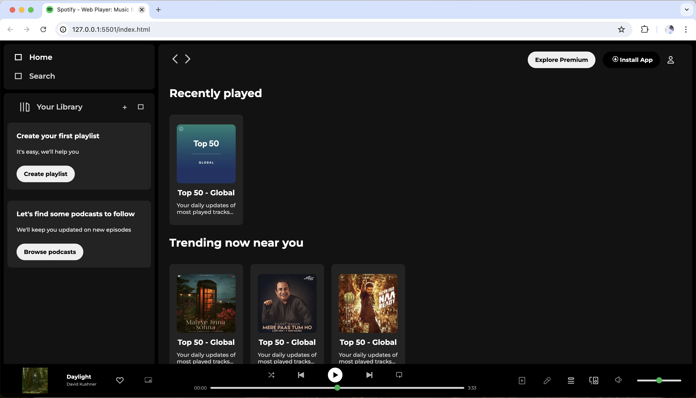
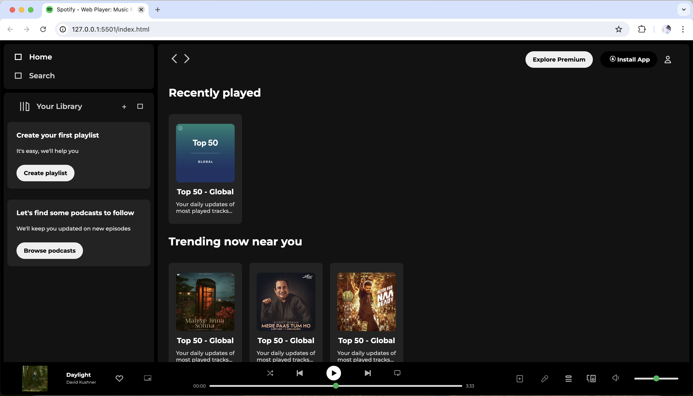

I'm Ankit Pandey, and I enjoy
Turning Ideas into Stunning Visuals, One Pixel at a Time 🔥
Front-End Developer
I'm Ankit Pandey, and I enjoy
Front-End Developer
I enjoy tackling challenges and developing intricate solutions. My goal is to create scalable, reliable, and secure outcomes.
The front-end is the face of the web—build it with care, and users will
love to interact.
Design tools like Figma, Framer, and Adobe XD empower designers to craft intuitive, pixel-perfect interfaces.
Git, Github, and Vercel — the ultimate trio psowering modern front-end magic with seamless version control, and deploying.
Open-Source Contribution
Hacktoberfest 2024 Journey I’m thrilled to have been part of Hacktoberfest 2024, where I contributed to over 15 open-source repositories. Out of these, 10 were successfully accepted, each one representing a valuable step in my journey to learn, grow, and give back to the community. Hacktoberfest showcased the true power of collaboration and innovation in open source, and I’m grateful to have contributed alongside so many talented developers. Reaching Level 4 on Holopin was a rewarding highlight of this experience, symbolizing my dedication to tackling tough challenges, building solutions, and continuously learning. This journey wasn’t just about committing code—it was about pushing boundaries, embracing new ideas, and making a meaningful impact in the tech community.
.png) 
